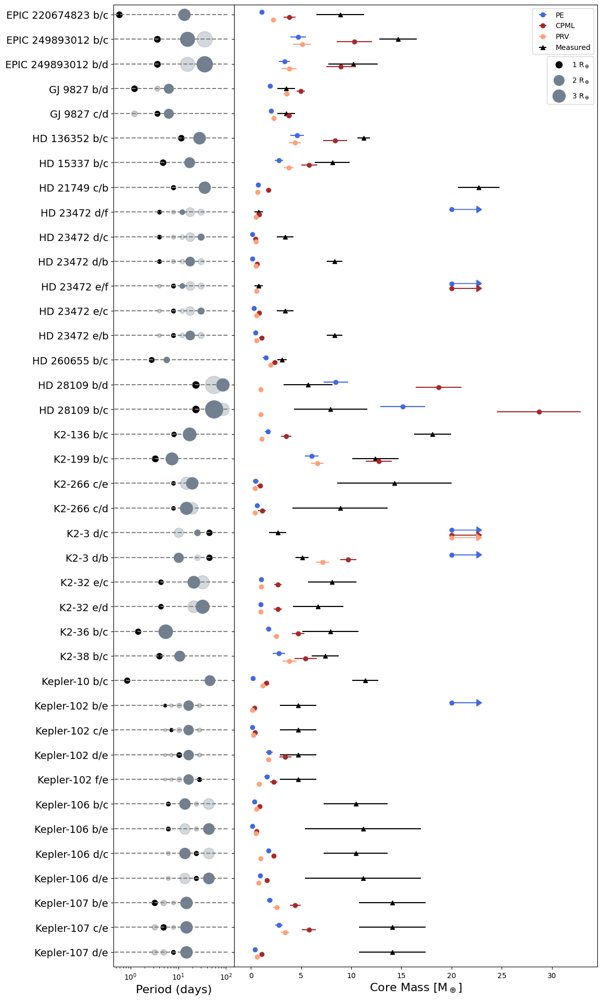
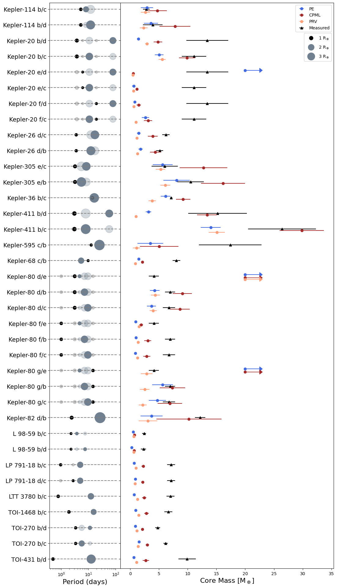

Figures 4 and 5: System Architectures#
1. Notebook Setup#
import numpy as np
import matplotlib.pyplot as plt
import glob
import pandas as pd
from scipy import stats
import matplotlib.gridspec as gridspec
---------------------------------------------------------------------------
ModuleNotFoundError Traceback (most recent call last)
Cell In[1], line 1
----> 1 import numpy as np
2 import matplotlib.pyplot as plt
3 import glob
ModuleNotFoundError: No module named 'numpy'
2. Import Data#
# Read in data
all_planets = pd.read_csv('../data/planets.csv')
# Mask dataframe
mass_mask = all_planets['env mass flag']==0
planets = all_planets[mass_mask]
3. Organize Data#
# Define a dictionary of planet information
pdict = {
'rockyplanets': list(planets['rocky planet name']),
'envplanets': list(planets['env planet name']),
'rockyrad': list(planets['rocky rad']),
'envrad': list(planets['env rad']),
'rockyper': list(planets['rocky period']),
'envper': list(planets['env period']),
'envmass': list(planets['env planet mass']),
'envmasserr': list(planets['env planet mass err'])
}
# Define a dictionary of plotting information for each mechanism
mechanism_dict = {
'PE': {'offset':-0.5, 'color':'royalblue'},
'CPML': {'offset':0.5, 'color':'brown'},
'PRV': {'offset':1, 'color':'lightsalmon'}
}
# Define a dictionary to map each planet to its respective system
system_dict = {}
for row,system in enumerate(planets['planet name']):
if system not in system_dict: system_dict[system] = {'rocky':set(),'env':set()}
system_dict[system]['rocky'].add(planets['rocky planet name'].iloc[row])
system_dict[system]['env'].add(planets['env planet name'].iloc[row])
# Resolve a naming conflict
system_dict['HD 21749'] = system_dict['GJ 143']
4. Helper Functions#
# Returns median error and absolute deviation
def median_err(file):
median=np.median(file)
mad=stats.median_abs_deviation(file)
return median, mad
# Plots each errorbar for the right hand subplots
def plot_error_helper(ax,mech,vals,file,ydisplace,mechanism_dict,label_counter):
# Collect information from dictionaries and calculate errors
info = mechanism_dict[mech]
med,err = median_err(file)
# Plot the errorbar
ax.errorbar(med, ydisplace+info['offset'],xerr=err,fmt='o',color=info['color'],label=((label_counter//1)*'_'+mech))
# Conditionally plot an arrow
if(vals.count(20)>=500):
ax.arrow(med, ydisplace+info['offset'],3,0,shape='full',color=info['color'],
length_includes_head=True,head_length=0.5,head_width=1.4)
# Load a data file
def load_file(mech,rocky,env,datadir='../data'):
# Load and return values from a csv
file = np.loadtxt(f'{datadir}/SCC_Outputs/{rocky}_{env}_{mech}.csv', delimiter=',')
vals=list(file)
return file,vals
# Main plotting function for the right-hand subplots
def plot_errors(ax,rocky,env,ydisplace,mechanism_dict,label_counter):
# Load Files
filePE,PEvals = load_file('PE',rocky,env)
fileCPML,CPMLvals = load_file('CPML',rocky,env)
filePRV,PRVvals = load_file('PRV',rocky,env)
# Plot errors (errorbars and arrows)
plot_error_helper(ax,'PE',PEvals,filePE,ydisplace,mechanism_dict,label_counter)
plot_error_helper(ax,'CPML',CPMLvals,fileCPML,ydisplace,mechanism_dict,label_counter)
plot_error_helper(ax,'PRV',PRVvals,filePRV,ydisplace,mechanism_dict,label_counter)
# Determine the size of the planet plotted
def size(rad):
if rad < 2: return rad * 40
elif rad < 3: return (rad-1) * 150
else: return (rad-2) * 300
# Subplot details to beautify the figure
def label_plot(axes,planet_num,labels):
# Specify y-tick information
axes[0].set_yticks(np.linspace(0, 5*(planet_num-1), planet_num))
axes[0].set_yticklabels(labels, fontsize=14)
axes[1].set_yticklabels(labels, visible=False)
# Set xscale and labels
axes[0].set_xscale('log')
axes[1].set_xlabel(r'Core Mass [M$_\oplus$]',fontsize=16)
axes[0].set_xlabel('Period (days)', fontsize=16)
# Invert y axis
axes[0].set_ylim((5*(planet_num-1)+3),-2)
# Plot the two legends
def legend_plot(ax,planet_num):
# Retrieve the legend for the right subplot
h,l = ax.get_legend_handles_labels()
# Plot three dummy objects for the second legend
r1 = ax.scatter(0, (5*(planet_num-1)+10), s=80, color='k',label=r'1 R$_\oplus$')
r2 = ax.scatter(0, (5*(planet_num-1)+10), s=200, color='slategray',label=r'2 R$_\oplus$')
r3 = ax.scatter(0, (5*(planet_num-1)+10), s=300, color='slategray',label=r'3 R$_\oplus$')
# Add two legends with proper positioning
ax.add_artist(plt.legend(h,l,loc='upper right'))
ax.legend(handles=[r1,r2,r3],labelspacing=1,borderpad=.6,bbox_to_anchor=(1, 0.95))
5. Plotting Function#
# Main plotting function to generate the figure
def plot_figure(planet_start_num,planet_num,pdict,mechanism_dict,system_dict,save='null',legend=False):
# Create a blank figure and axes
fig = plt.figure(figsize=[12, 24],facecolor='white')
spec= gridspec.GridSpec(ncols=2, nrows=1, width_ratios=[1,3], wspace=0, figure=fig)
ax1=fig.add_subplot(spec[0])
ax2=fig.add_subplot(spec[1],sharey=ax1)
# Define initial values for label list, current system, and system index
labels,system,sysi = [],'null',0
# Loop through systems, building top to bottom
for i in range(planet_start_num,planet_start_num+planet_num):
# Set displacement and plot on right axis
ydisplace = 5 * (i-planet_start_num)
# Plot the right subplot
plot_errors(ax2,pdict['rockyplanets'][i],pdict['envplanets'][i],ydisplace,mechanism_dict,i-planet_start_num)
ax2.errorbar(pdict['envmass'][i], ydisplace, xerr=[pdict['envmasserr'][i]], fmt='^', color='k', label=(i-planet_start_num)*'_'+'Measured', zorder=1)
ax1.hlines(ydisplace, 0, 115, linestyles="--", color='gray')
ax1.scatter(pdict['envper'][i], ydisplace, s=size(pdict['envrad'][i]), color='slategray')
ax1.scatter(pdict['rockyper'][i], ydisplace, s=pdict['rockyrad'][i]*40, color='k')
# Determine system labels
envletter = pdict['envplanets'][i].split(' ')[-1]
labels.append(f'{pdict['rockyplanets'][i]}/{envletter}')
# Determine which system is being plotted
if system != planets['planet name'].iloc[i]: system,sysi = planets['planet name'].iloc[i],i
# Plot enveloped and rocky planets
for j in range(len(system_dict[system]['env'])):
ax1.scatter(pdict['envper'][sysi+j], ydisplace, s=size(pdict['envrad'][sysi+j]), color='slategray', alpha=0.3)
for j in range(len(system_dict[system]['rocky'])):
env_num = len(system_dict[system]['env'])
ax1.scatter(pdict['rockyper'][sysi+j*env_num], ydisplace, s=pdict['rockyrad'][sysi+j*env_num]*40, color='k', alpha=0.2)
# Plot labels, legends, and save figure
label_plot([ax1,ax2],planet_num,labels)
if legend: legend_plot(ax2,planet_num)
if save!='null': plt.savefig(save, dpi=300., bbox_inches='tight')
6. Generating the Figures#
# Plot Figure 4
plot_figure(0,39,pdict,mechanism_dict,system_dict,save='../figures/Figure 4.png',legend=True)

# Plot Figure 5
plot_figure(39,36,pdict,mechanism_dict,system_dict,save='../figures/Figure 5.png',legend=True)
